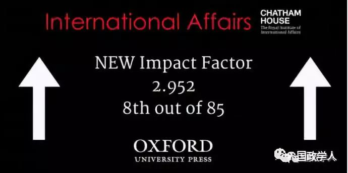
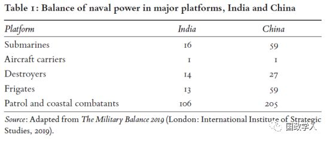
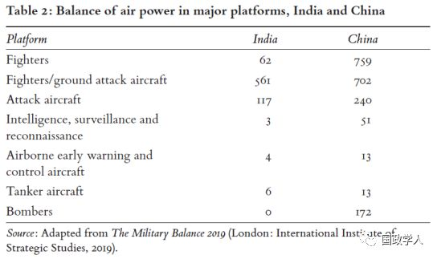
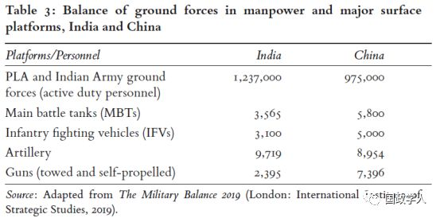

收录于合集

简 介
** 【作者】** Harsh V. Pant，英国伦敦国王学院防御研究部门讲师，印度管理学院客座教授，主要研究亚太安全问题。Kartik Bommakanti，观察家研究基金会（Observer Research Foundation）副研究员，主要研究方向为太空军事议题，此外也包括核武器、传统和次传统威胁等，近期主要研究工作为中印太空军事战略对比。
** 【 编译 】** 李雯珲
** **【 校对 】****兰星辰，邢戎
** **【 审核 】****丁伟航
** **【 来源 】****International Affairs, Volume 95, Issue 4, July 2019, Pages 835–857, https://doi.org/10.1093/ia/iiz053
** 【期刊】** 《国际事务》（International Affair），世界领先的国际关系期刊之一，也是少数几本涵盖整个学科的期刊之一。该期刊由伦敦皇家国际事务研究所（Royal Institute of International Affairs）于90年前创立并进行编辑，以学术严谨、注重实践而闻名。

印度国家安全： 挑战与困境
India’s national security: challenges and dilemmas
内容提要
均势重心逐渐从西方转移到东方，加剧了大国之间的安全竞赛。 随着印度在印太地区经济和军事实力增长，它也面临着一系列国内外安全挑战。印度 国防军队现代化 是一个复杂的进程，涉及人力和火力之间的平衡以及武器来源的国产和进口之间的平衡。印度在改革和重组军队以应对安全挑战，力求在不损害获得武器的透明度和完整性的情况下满足三个军种的需要。作者认为， 中国和巴基斯坦是印度主要对手，而它们都在通过现代化快速提高军事实力， 这是印度国家安全面临的严峻挑战。而 印度文官对军事力量的严格控制 和 军队联合作战 意愿 的不足 对其军事现代化造成不利影响。本文分五个部分探讨印度在构建自身军事力量过程中面临的机遇、挑战和束缚。
文章导读
**
**
**1
**
印度面临的威胁环境的本质 ****
印度在 常规 、 次常规 和 核问题 领域都面临着复杂的威胁。印度与中国和巴基斯坦都有 领土争端 ，中巴两国在 大陆边界和海洋上都对印度构成军事威胁 。如今，中国人民解放军海军的常规水面和水下部署表明，在紧张的中印战略关系史上，中国首次在印度洋地区扮演更强大的角色。 中国人民解放军在印度洋建立多个军事基地和后勤补给中心，进一步压缩了印度海军在该地区的地缘和战略优势 。中巴军事合作不断深入拓展，中国与印度洋其他国家（如缅甸）也建立了伙伴关系。中国可以通过巴基斯坦和缅甸实现其在印度洋海域的战略目标。中国还通过军队改革进一步提高了快速反应能力和战斗力。印度面临的 次传统威胁主要来自于巴基斯坦 。除传统和次传统安全威胁外，中国与巴基斯坦在核技术和导弹技术领域的深入合作也对印度构成了 核威胁 。
**
**
**2
**
印度政府的反应和武力运用
在此背景下，印度部署军事力量应对常规和次常规冲突，同时也在发展自己的核武器。自1947年印度独立后的四十年里，印度对巴基斯坦的常规战争多以胜利告终，1962年印中战争遭遇失败。
1998年的核试验改变了印度在对付巴基斯坦和中国时的威慑考量，却未必对印度有利。一方面，一些批评者认为， 核试验意味着印度放弃了其对巴基斯坦的传统优势 ；另一方面，与中国相比， 印度在核力量方面仍有较大差距 ，难以对中国施加有效的核威慑。
印度最近的冲突主要是以叛乱和军事冲突为主要形式的低强度战争。
一方面，印度要应对 来自巴基斯坦的恐怖主义的侵袭 。1999年印巴卡吉尔战争（the Kargil War）一方面部分印证了拥有核武器后巴基斯坦在领土争端中更加激进，另一方面，在此之后，印度不得不频繁面对巴基斯坦所输出的恐怖主义活动。当下印度面临的挑战是在 核背景下如何利用常规优势应对巴基斯坦输出的恐怖主义活动 。在核武背景下，印度很难应对巴基斯坦采取的恐怖主义等次常规暴力手段。印度常用手段是派步兵团向克什米尔巴基斯坦实际控制区 发动有限进攻 。9·11事件和随后发生的反恐战争推动印度改变策略，印度利用巴基斯坦对恐怖主义的支持对其进行 外交孤立 ，并取得了一些成效。
另一方面，除了对巴基斯坦的低强度战争，印度还要 应对国内由于部落、种族、宗教、语言等问题引起的叛乱 。印度政府会根据叛乱的具体表现采取不同的反叛乱策略。印度的反叛乱战略不仅是军事组织、理论或战术的产物，而且同样受到政治因素的影响。反叛乱行动本质上需要大量人力，这就与建立一支更精干的战斗部队的目标相冲突。边境地区大量的军事部署消耗了军队重新配置资源的能力，难以形成有效的战斗力量。
当前印度似乎在努力 避免陷入消耗战 （attrition warfare），因为消耗战会限制军队应对其他紧急事件。尽管如此，印度部队的规划还是为核化条件下的常规战争作出了准备。 桑塔吉理论 （Sundarji doctrine） 是一种长期指导印度军队的传统战争理论 。该理论指导印度 在边境部署七支防御部队 , 这些部队主要为步兵师团，主要任务是在移动机械化师团的支持下进行静态防御，延缓并阻止敌人的进攻。印度对巴基斯坦的进攻行动由三个攻击编队进行，他们平时距离边境较远，战时在近距离空中支援下进行反攻。
从上世纪80年代初到2014年，这一直是印度军队传统主义的核心内容。但是，在2001年一场巴基斯坦支持的针对印度议会的恐怖袭击中，印度军方耗费大量人力物力调遣军队，却没有达到预期效果，此后，这一战略部署饱受批评。一方面， 军队调动耗时过长，大大削弱了军队的机动性 ；另一方面，印度领导人 缺乏明确的打击目标和控制局势升级的手段 。因此，尽管在印巴冲突中印度实力较强，但其并不愿意进行消耗战。
2002年印度发动帕拉克拉姆作战行动（Operation Parakram），但由于动员机制落后而失败，这促使印度调整战略思想，提出了“ 冷启动 ”（Cold Start）理论。这是一种 有限战争理论 ，它允许“守军”从缓慢移动的军队中分离出来，用于更快速的进攻行动。军队被分为小型“ 综合作战小组 ”（integrated battle groups），由步兵、炮兵和装甲兵组成，承担混合作战任务。这样既可以对巴基斯坦恐怖袭击进行迅速打击，也可以保卫关键性阵地以威慑未来的恐怖袭击。但是冷启动理论也面临着实施难度大、文官决策者改革军队意愿低等难题。
除了国内叛乱和来自巴基斯坦的恐怖主义，印度还必须面对 军事实力迅速崛起的中国和频发的印中边界争端 。2017年5月至8月发生在中国、不丹、印度三国交界处的 洞朗对峙事件 局势最为紧张。印度反驳中国的主权主张，认为这是对现状和印度安全的极大挑战。尽管印中之间一直在进行谈判，但这次事件是三十年来最严重的事件， 反映了印中关系的脆弱性 。虽然紧张局势被化解，但印中之间类似的危机仍有可能再次发生。
与巴基斯坦的次常规冲突和与中国的边境领土争端引发印度对于两线作战的担忧 。中国在克什米尔地区巴基斯坦实际控制区部署军队并将其作为中巴经济走廊（China-Pakistan Economic Corridor）一部分，使印度面临的局势更加严峻。印巴军事冲突会不可避免地波及中国军队和平民，进而引起中国对印反击。 印度在空军和海军方面与中国相比还有较大差距 （如下表所示）。中国人民解放军已经完成了精简员额和战区改革，而印度军队人数庞杂且仍然是单一军种作战。中国的军事战略目标不仅仅是防御美国，而是“聚焦于中国未来可能会面对的特定冲突和紧急事件，包括台湾和其他潜在的冲突，如中印边界和海洋争端等”。



克制 （restraint）一直是印度使用武力的一个重要因素， 印度的决策者仍然倾向于有限地而不是广泛地使用军事手段 。印度使用武力显然是以政治逻辑而不是以军事需要为指导，因此，绝对的政治控制是任何武力使用必不可少的组成部分。为了应对印度面临的不利因素，印度决策者注重经营伙伴关系，而不是结盟。
**3
**
战略伙伴和联盟的作用
战略伙伴 （strategic partnerships）而不是盟友关系（alliances）， 是印度外交的核心基础 。一些学者试图解释伙伴关系在亚洲地区盛行的原因。例如， 国内因素、政治观念和安全因素都促使日本加强与印度的伙伴关系，当然也有美国的支持 。尽管中国实力在迅速增长，印度等亚洲国家并没有诉诸联盟，而是保持了对外关系的灵活性。印度和日本并没有插手对方与中国的争端，即使发生战争，双方进行军事援助的可能性也很低。
由于高度依赖武器进口，印度寻求 建立多样化的伙伴关系以分散风险 。除了加强与美国的军事联系外，印度还与法国和以色列建立战略性关系。然而， 俄罗斯一直是印度最大的武器供应国 。尽管为了减轻西方制裁带来的压力，俄罗斯致力于改善与中国和巴基斯坦的关系，俄印之间的武器买卖合作仍在继续。 印度高度依赖武器进口， 其 与俄罗斯和美国的合作表明印度希望在这二者之间保持平衡，并且巩固其传统的不结盟政策 。上世纪60年代，在冷战和中苏关系破裂的背景下印度与俄罗斯开始建立并巩固国防合作，当前的印俄合作仍受到路径依赖（path dependence）的影响。但是俄罗斯对印度的武器出口从来不是无条件的，且近来 俄中关系的发展加剧了印度的战略压力 。在一些限制性武器类型方面俄罗斯是印度的唯一供应者，比如核潜艇和巡航导弹等。尽管美国威胁制裁，印度与俄罗斯仍然达成了进口地空导弹的协议。可以预见 在接下来的几年里俄罗斯将仍然是印度重要的军事进口国 。
与对日关系相类似，印度与美俄的伙伴关系并不意味着它们在冲突中会相互支援。对印度而言，与美俄合作的最大挑战是供应稳定性问题。 俄罗斯是五十年来印度军事进口的主要来源，声誉较高，稳定性较强 。但是美国方面似乎有一些变化无常，最明显的例子是在1965年巴基斯坦挑起的印巴冲突中美国决定减少对印度的武器供应。不过此后双方关系有了改善，2004年美印达成《深化战略伙伴关系协定》， 2016 年美国称印度是“主要防务伙伴”（major defence partner）。我们很难确定如果未来印中、印巴或印度与中巴同时发生冲突，俄罗斯和美国将采取何种立场，这使得印度完善防御体系结构显得更加必要。
**
**
**4
重组印度军队： 军队联合的挑战 ****
现代军事通过联合作战可以发挥更大军事效力，对战争产生决定性影响。 联合作战也是冷启动理论的关键 。在这里 联合作战 （joined-up working）指 多军种协同规划、训练和作业的能力 ，以及将不同军种的军事理论（service doctrines）和部队实际结合起来的能力。
实现联合有两种模式： 协调 （coordination）和 一体化 （integration）。选择哪种模式是印度关于军队联合争论的核心。协调可以最大程度地保证各部队的自主性，而一体化要求实现统一指挥。军队联合也有一定弊端，如有可能扼杀军队的创造性，更为重要的是，军队联合可能对民选政府构成威胁。此外，核武器背景下军方特别关注大规模进攻巴基斯坦的军事行动，这也是文官反对军队联合的重要因素。一般来说，印度军事行动以协调模式为基础。然而，尽管对手已经就军事能力、指导思想和组织方式进行了有效改革，印度的政策制定者仍然漠视联合作战的重要性。 缺乏政治意愿和军种间的竞争是军队联合的重要障碍 。
中国不仅建立了五大战区，而且每一战区都设立了统一的指挥官，且中国与巴基斯坦在装备、指导思想、军事力量结构和军事演习等方面建立了协调一致的关系。而印度在推进军队改革方面与中国相比仍有较大差距。不仅如此，中国已经通过裁军实现军队改革，而印度要在一边是技术和战斗力，另一边是人力密集的战斗部队之间进行权衡。在军队组织、计划、培训和运作中缺乏大量文职人员投入的情况下， 协调模式和单一军种作战仍将占主导地位 。
**5
印度国防采购政策的后果
为了应对复杂的安全挑战，印度从多个国家进口军事装备，增强军事实力，并在应对严峻的威胁形势方面花费了大量资源。印度政府获取军事资源主要有三个途径，一是 吸引外资流向国防工业 ，二是 政府间合作进口武器 ，三是 多样化的政策 。从2001年开始，印度逐渐放宽外资准入，利用外资发展国防。但是国防工业自由化吸引到的外资有限，印度仍然严重依赖武器进口。 印度有一套复杂而精细的采购体系，并设定一套正式准则规定了国防采购程序 。这套程序有两个显著特点。一方面，它要求所有外国供应商与印度政府签署诚信协议，对供应商提出了严格的服务质量要求。另一方面，程序规定的采购过程复杂且层次分明，包括自主采购、通过印度国防研究和发展组织（Defence Research and Development Organization）采购以及政府间签订合同等，以保证采购过程的完整性和复杂性。总的来说， 印度的国防采办制度较为分散，缺乏统一协调，耗时较长 ，且对此进行的改革进展缓慢。此外，印度的国防采办由于缺少专家规划指导而受到束缚。
印度与其他国家的战略性关系也影响着军事采购 。为了避免垄断，印度从多个伙伴国购买军备。印度是世界上最大的军备进口国，且近年来进口量在迅速增加。 俄罗斯 一直是印度最大的军备供应国，且在接下来几年里很有可能继续保持该地位； 美国 是印度第二大军备供应国，出口量迅速增加，且由于两国战略关系的改善，在一些关键领域美国已经超过了俄罗斯； 以色列 位列第三。 从多国进口武器虽然丰富了印度的选择，但是也增加了印度所面临的来自供应国的压力。
**6
** ****结 语 ****
这篇文章阐释了印度 如何处理有关使用武力的问题 ， 如何解决冲突和改革军队 ，以及 战略伙伴关系对解决这些问题的影响 。印度的安全压力较大，容易与邻国发生冲突。印度所追求的军事采购模式并不理想，这反映出印度政府在本土化能力、在国防官僚机构内建立核心能力和探索综合解决办法以应对高级国防管理的挑战方面所面临的困难。为了弥补传统能力不足，印度对外依赖可能会持续数年。在战略能力方面， 印度需要走向全面持续的本土化 。在其他方面，如果印度文职领导层不能解决军队联合的问题，可能会削弱印度军队的军事效能和作战表现。此外，军种间的竞争、缺乏对军事主义的民事审查以及民众对相关重大事件的漠视和推卸责任等因素，都将进一步侵蚀印度军队的实力。
更多阅读
【重磅速递】约瑟夫·奈：美国霸权的兴衰：从威尔逊到特朗普 | 国政学人
【重磅推荐】巴里·布赞：英国学派视角下的中国崛起 | 国政学人
【重磅速递】米尔斯海默：注定失败：自由主义国际秩序的兴衰 | 国政学人
【百年国关】历史在国际社会中的应用：从巴黎和会到现在 | 国政学人
【国际组织】IO杂志：联合国维和行动的武力运用问题研究 | 国政学人
【国际秩序】为什么自由主义国际秩序理念将美国外交政策引入歧途？| 国政学人
【关系理论】“关系”：世界政治关系理论的中国话语 | 国政学人
【英国学派】张勇进：中国与全球国际社会中的自由主义等级制：实力与对规范变迁的协商 | 国政学人
【地区秩序】论经济实力的可转化性：中国经济崛起与东亚安全秩序 | 国政学人
【中俄关系】不得已的伙伴：系统-单元动态与中俄关系 | 国政学人
【IPE研究】美国对外贸易政策的“1934年体制”是如何形成的？| 国政学人
【现实主义】斯蒂芬·沃尔特：傲慢的终结与美国克制的新时代 | 国政学人
【理论批判】系统、层次与结构理论：沃尔兹的理论并非系统理论 | 国政学人
【外交政策】单极体系下的不和平状态与美国外交政策 | 国政学人
【欧洲研究】资本主义多样性与合规：加入欧盟后中东欧的经济改革 | 国政学人
【理论研究】吴建树：权力、道德、均势、联盟与摩根索——汉斯·摩根索的经典现实主义思想再解读
【友谊国关】将友谊重新引入国际关系：从中国到西方的关系本体论
【定量研究】政党实力和经济增长（Party Strength and Economic Growth）| 国政学人
【台湾学者】向骏：美国从“霸权稳定”到“霸凌不稳定” | 国政学人
【理论研究】巴里·布赞等：重思日本：主流国际关系理论的偏见 | 国政学人
【南亚研究】南亚对冲：中印竞争中经济和安全利益的平衡 | 国政学人
【外交政策】美国霸权的自我毁灭：华盛顿浪费了单极时代 | 国政学人
【定量研究】谁在欧洲议会中领导委员会？ ——基于2014年欧洲议会选举的研究 | 国政学人